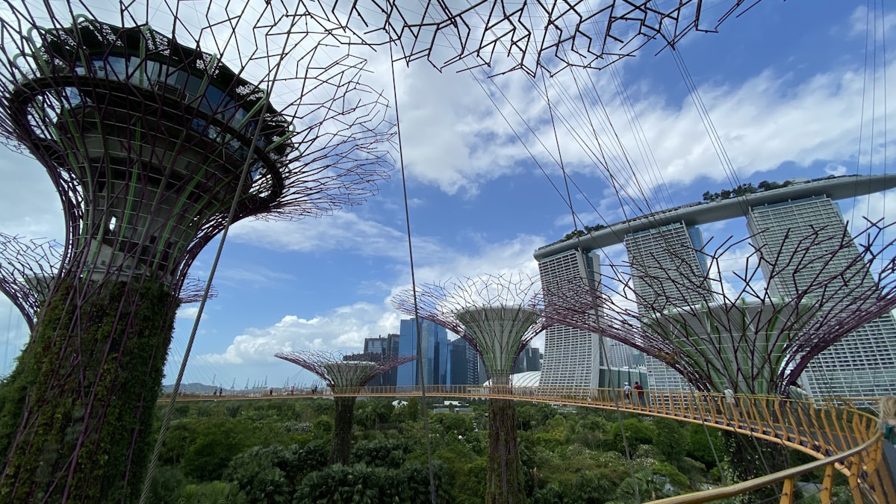
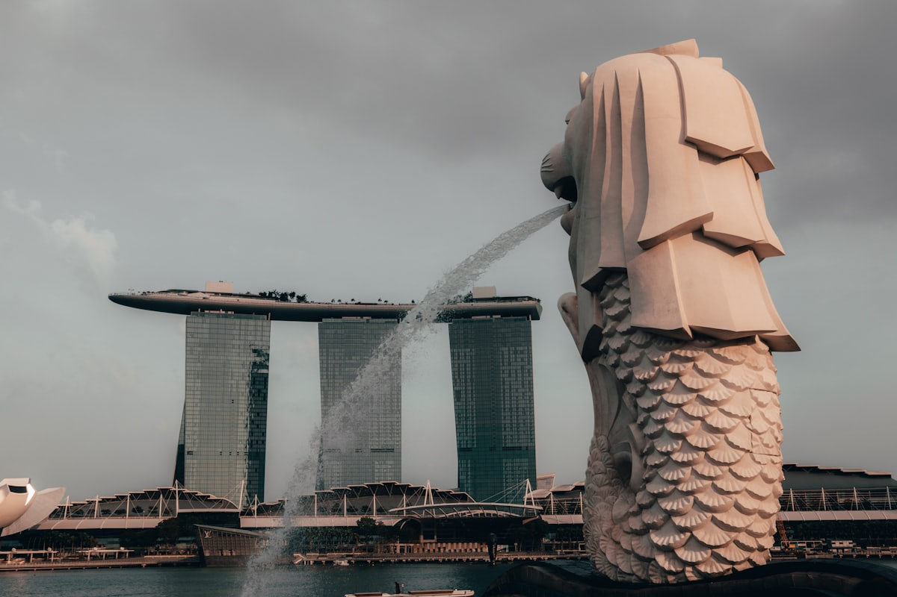
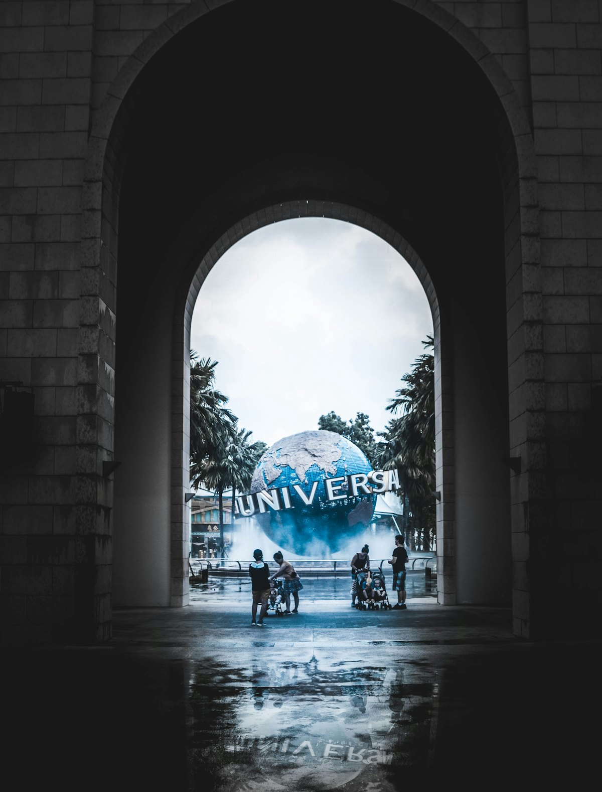
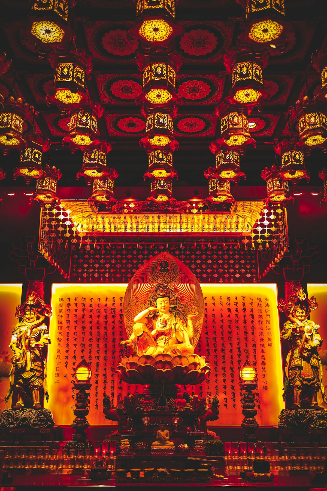
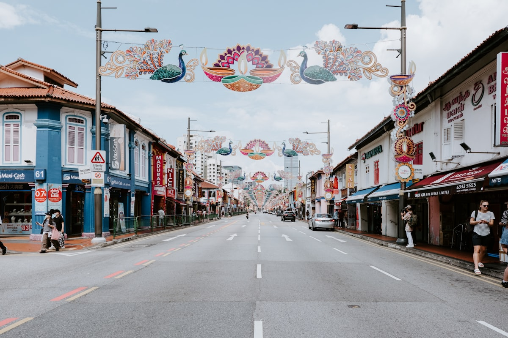
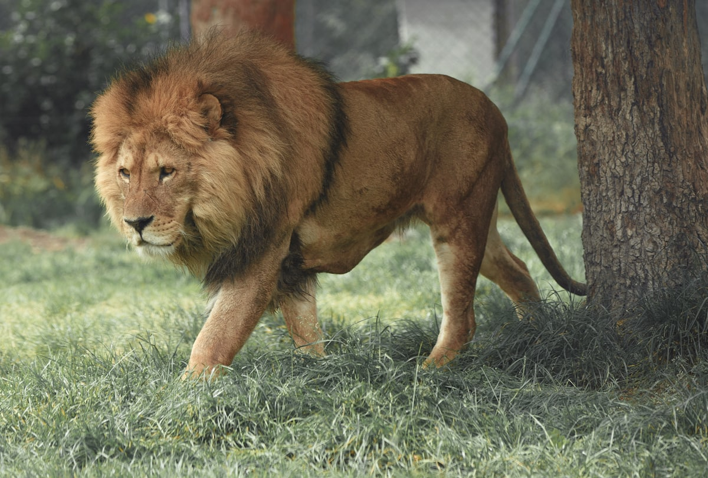
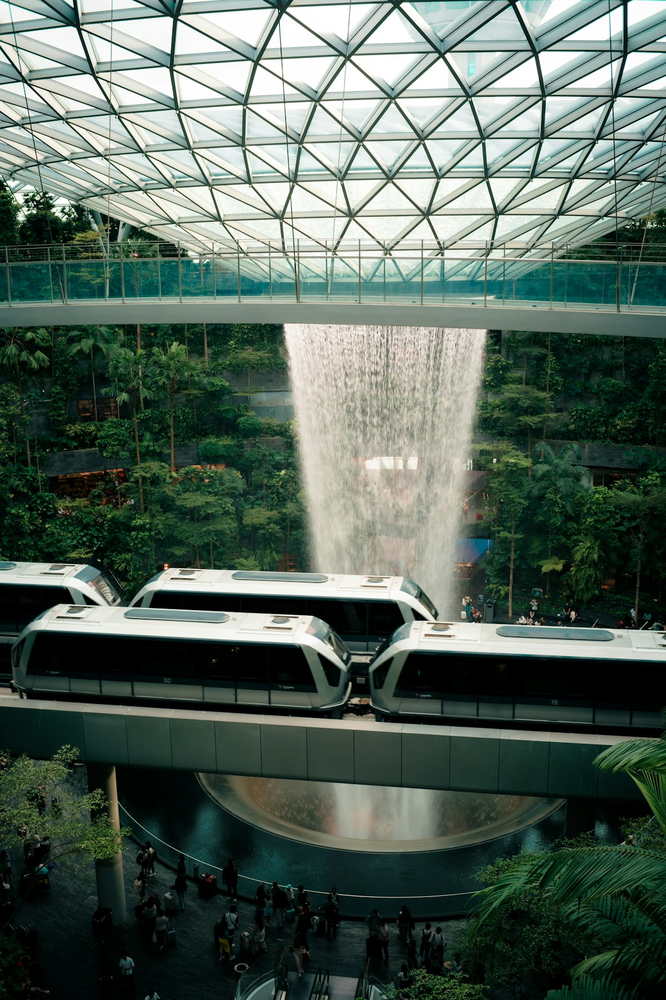
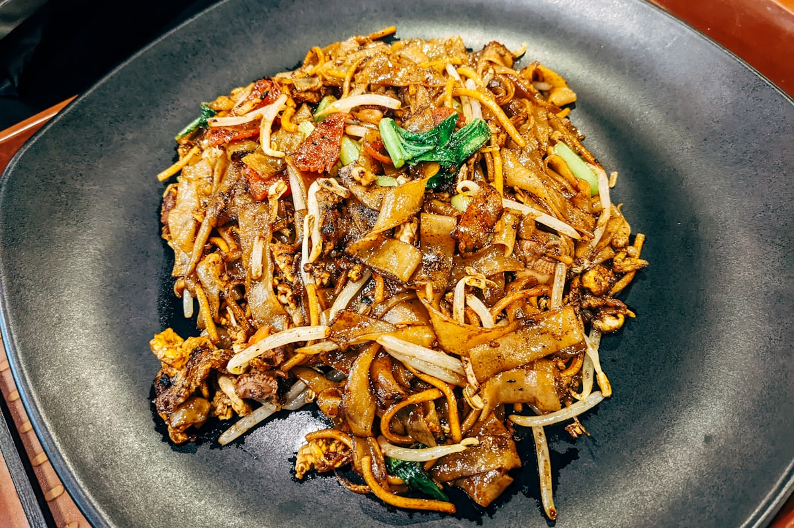

| 事项 | 结论 |
|---|---|
| 事项 | 结论 |
| 签证（最关键） | 中国普通护照免签 30 天（2024 年起中新互免）；但必须入境前 3 天内在线免费填报 SG Arrival Card 电子入境卡，未填可能被拒登机或拒绝入境 |
| 时差 | 与北京相同（0 小时），下飞机无缝对接，无倒时差烦恼 |
| 电源 | 230V，G 型三脚英式插座，两扁脚（国标）插头需带转换头 |
| 货币/支付 | 新元 SGD，1 SGD ≈ 5.4 元人民币；支付宝/微信/银行卡（Visa/Master）普遍可用，小贩中心备少量现金 |
| 推荐方案 | 滨海湾 2 天（地标+花园）+ 圣淘沙 2 天（环球影城+海洋馆）+ 市区文化 2 天 + 樟宜 1 天收尾 |
| 预算（人均） | 经济 8000–12000 ／ 标准 15000–22000 ／ 舒适 30000–45000（人民币） |
| 三件提前事 | ① 入境前 3 天内填 SG Arrival Card ② 订环球影城/金沙观景台/滨海湾花园门票 ③ 机票酒店提前 2 个月（住宿是全岛最大开销） |
| 季节提醒 | 全年炎热（28–32℃），11–2 月为雨季相对凉快；午后雷阵雨常年随机，随身带伞 |
以下为 7 天 6 晚的推荐节奏：以地铁（MRT）为骨架，全岛单程最长 40 分钟。每日主景点 ≤2 个，傍晚留给免费灯光秀（超级树/金沙水舞）和小贩中心美食。
| 日期 | 行程 | 过夜地 | 主题 |
|---|---|---|---|
| D1 抵新加坡 | 北京✈新加坡（直飞约 6.5h），入境后地铁进城，傍晚滨海湾花园超级树灯光秀 | 牛车水/滨海湾 | 抵达+滨海湾夜景 |
| D2 | 鱼尾狮公园 → 金沙购物中心 → 滨海湾花园花穹+云雾林 → 金沙观景台看日落 | 滨海湾 | 地标核心 |
| D3 | 圣淘沙·环球影城全天（7 大主题区+小黄人乐园），晚上时光之翼水幕秀 | 圣淘沙 | 乐园日 |
| D4 | 圣淘沙·S.E.A.海洋馆 → 斜坡滑车+空中吊椅 → 巴拉湾海滩，傍晚回市区 | 滨海湾/牛车水 | 圣淘沙休闲 |
| D5 | 牛车水 → 小印度 → 甘榜格南（哈芝巷）→ 克拉码头辣椒螃蟹晚餐 | 牛车水/武吉士 | 多元文化 |
| D6 | 新加坡动物园（日）→ 河川生态园 → 夜间动物园（夜），万态世界一整天 | 北部万态 | 动物园日 |
| D7 返程 | 乌节路购物 → 樟宜机场星耀樟宜（雨漩涡+星空花园）→ 返程 | — | 购物+樟宜 |
以下为 7 天全程的逐小时执行时间线，可当作「当天打开照着走」的清单。标注 ※ 的可选项视体力与天气取舍。
| 时间 | 事项 |
|---|---|
| 12:00–15:30 | 北京✈新加坡（大兴/首都直飞约 6.5h，时差 0），落地樟宜机场——连续 12 年全球最佳机场 |
| 15:30–17:00 | 入境（免签 30 天，出示电子 e-Pass）→ 机场买 EZ-Link 卡（S$10 含 S$5 工本费）→ 地铁进城约 40 分钟，入住牛车水/滨海湾区域酒店 |
| 17:30–19:00 | 滨海湾花园·擎天树丛（户外免费）：18 棵巨型人工树，日落时分最出片 |
| 19:00–20:00 | 晚餐：金沙购物中心食阁 或 老巴刹沙嗲街（人均 5–10 SGD） |
| 20:00–21:00 | 超级树灯光秀 Garden Rhapsody（每晚 19:45/20:45，免费）→ 金沙水舞 Spectra 灯光秀后回酒店 |
| 时间 | 事项 |
|---|---|
| 08:30–10:00 | 鱼尾狮公园（免费）：经典喷水鱼尾狮机位，隔岸拍金沙三塔全景 |
| 10:00–12:00 | 金沙购物中心（免费）：室内人造运河、螺旋桥（Helix Bridge），可坐舢舨船游运河 |
| 12:00–13:00 | 午餐：滨海湾金沙 B2 食阁 或 金沙商场餐厅 |
| 13:30–16:30 | 滨海湾花园温室：花穹 Flower Dome + 云雾林 Cloud Forest（海外游客联票 46 SGD），云雾林 35 米室内瀑布 |
| 17:00–19:00 | 金沙观景台 SkyPark（56 层，非高峰 35 / 高峰 39 SGD）：日落转夜景，全岛天际线尽收眼底 |
| 19:30–20:45 | 晚餐后回到花园，从树下仰看第二场超级树灯光秀 |
| 时间 | 事项 |
|---|---|
| 08:30 | 市区→圣淘沙：地铁到 HarbourFront 转 Sentosa Express 单轨（S$4）或搭花柏山缆车 |
| 09:00–18:00 | 环球影城全天（一日票平日 76 / 周末 86 / 旺季 96 SGD）：变形金刚 3D、木乃伊室内过山车、侏罗纪河流探险、小黄人乐园（新园区）、好莱坞大道巡游 |
| 12:30–13:30 | 园内午餐：侏罗纪区主题餐厅 或 汉堡快餐 |
| 18:30–20:30 | 出园可选：时光之翼 Wings of Time 灯光水幕秀 或 斜坡滑车夜场（周五六限定的 Night Luge） |
| 时间 | 事项 |
|---|---|
| 09:00–11:00 | S.E.A. 海洋馆（新馆成人 43 SGD 起）：东南亚最大水族馆，40 米海底隧道看鲨鱼与鳐鱼 |
| 11:30–12:30 | 午餐：圣淘沙名胜世界美食街 |
| 13:00–15:00 | 斜坡滑车 Skyline Luge + 空中吊椅（3 次组合约 33–42 SGD）：4 条滑道任选，滑车下来吊椅回山顶，俯瞰圣淘沙与海 |
| 15:30–17:00 | 巴拉湾海滩 Palawan Beach：走过吊桥到「亚洲大陆最南端」打卡点 |
| 17:30–19:00 | 回市区，晚餐：牛车水 或 克拉码头河畔餐厅 |
| 时间 | 事项 |
|---|---|
| 08:30–11:30 | 牛车水：佛牙寺龙华院（免费）、马里安曼兴都庙，麦士威熟食中心吃天天海南鸡饭（约 5 SGD） |
| 12:00–14:00 | 小印度：竹脚中心 Tekka Centre（香料+咖喱）、维拉玛卡里亚曼兴都庙，尝印度煎饼 Roti Prata |
| 14:30–17:00 | 甘榜格南：苏丹回教堂（金色穹顶）、哈芝巷彩色壁画与独立小店（免费） |
| 17:30–19:00 | 武吉士街 或 克拉码头河畔散步，老式店屋夜景 |
| 19:30 | 晚餐：克拉码头珍宝海鲜 辣椒螃蟹（人均 40–80 SGD） |
| 时间 | 事项 |
|---|---|
| 09:00 | 市区→万态世界 Mandai（北部）：地铁 Khatib 站转接驳巴士 或 打车 30 分钟 |
| 10:00–16:30 | 新加坡动物园（成人 49 SGD）：开放式展区，猩猩岛/长颈鹿/大象，游园电车免费无限坐，11:00 看动物表演 |
| 16:30–18:00 | 衔接：河川生态园（成人 45 SGD，看大熊猫+亚马逊河探索游船）并晚餐 |
| 19:00–22:00 | 夜间动物园（成人 58 SGD）：世界首家夜间动物园，坐导览电车看马来貘、老虎、印度犀牛等夜行动物，可加选徒步小径 |
| 时间 | 事项 |
|---|---|
| 09:00–12:30 | 乌节路购物：ION Orchard、义安城、百丽宫三大商场，免税店补货（GST 9% 离境可退） |
| 12:30–13:30 | 午餐：乌节路亚坤咖椰吐司 或 商场内新加坡菜餐厅 |
| 14:00–15:30 | 退房，前往樟宜机场（国际航班建议提前 3 小时到） |
| 15:30–19:30 | 星耀樟宜 Jewel：40 米雨漩涡（免费，灯光秀 20:00/21:00）、森林谷、星空花园（SGD 8），值机后继续逛 |
| 20:00 起 | 樟宜✈北京（直飞约 6.5h），机上休息，到家倒头就睡 |
必去（必去）/ 顺路（顺路）/ 可跳过（可跳过）。

必去
必去
顺路
顺路
必去
必去
顺路图片为 Unsplash 主题图（滨海湾金沙/超级树、鱼尾狮、圣淘沙、牛车水、小印度、新加坡动物园、星耀樟宜、新加坡美食均为新加坡实景），用于页面配图。更多免费玩法：金沙水舞灯光秀、哈芝巷、克拉码头、新加坡植物园、东海岸公园骑行。
点击左侧节点可在地图上定位；点击地图 marker 会高亮对应节点。坐标为 WGS-84 转 GCJ-02 纠偏后标注。
以下为单人、不含购物的估算，人民币计价；出发地基准北京。汇率按 1 新加坡元 ≈ 5.4 元人民币估算。注意：新加坡消费显著高于东南亚其他目的地，住宿是全岛最大开销；往返机票按淡季 3000–5000 元计。
| 项目 | 经济（8000–12000） | 标准（15000–22000） | 舒适（30000–45000） |
|---|---|---|---|
| 往返机票 | 转机 2500–3500 | 直飞 3500–5500 | 直飞商务/灵活改签 8000–12000 |
| 住宿（6 晚） | 小印度/牛车水青旅或快捷 400–650/晚 | 牛车水/乌节路商务 800–1500/晚 | 滨海湾/圣淘沙五星 2000–3500/晚 |
| 市内交通 | EZ-Link 地铁+公交 300–500 | EZ-Link + 少量打车 500–900 | 接送机+Grab 随叫随到 1200–2500 |
| 门票 | 核心景点 1200–1800（环球影城+花园） | 含金沙观景台/海洋馆 3000–4000 | 全含+快速通+夜间动物园 6000–9000 |
| 餐饮（7 天） | 小贩中心+商场食阁 1200–1800 | 小贩中心+正餐混合 2500–4000 | 辣椒螃蟹/米其林小贩 6000–10000 |
把购物压缩到半天：加半天如切/加东娘惹区（彩色店屋+娘惹糕）、晚上去芽笼吃榴莲+田鸡粥，东海岸公园租单车沿海骑行。新加坡的精彩在街头和小贩中心，预算不变体验翻倍。
| 方式 | 时长 | 参考价 | 备注 |
|---|---|---|---|
| 直飞（推荐） | 北京→新加坡约 6.5h | 往返 3000–5000 元 | 国航/新航/东航，大兴或首都出发，每天多班 |
| 转机 | 9–13h | 2300–3500 元 | 经上海/广州/香港/吉隆坡，便宜但费时 |
| 邮轮 | 5–7 天 | 4000 元起 | 上海/香港出发的东南亚邮轮线（皇家加勒比等） |
| 区域 | 价格/晚（人民币） | 优点 | 短板 |
|---|---|---|---|
| 滨海湾 | 标准 1200–2500 / 舒适 3000+ | 金沙与花园步行可达，夜景无敌 | 全岛最贵，性价比低 |
| 乌节路 | 经济 600–1000 / 标准 1000–2000 | 购物天堂，地铁直达各线 | 周末与假日房价上浮明显 |
| 牛车水/武吉士 | 经济 400–800 / 标准 800–1600 | 性价比高，小贩美食环绕 | 老店屋隔音一般 |
| 小印度 | 经济 300–600 | 全岛最便宜的合理位置 | 环境较杂，深夜街道偏暗 |
| 圣淘沙 | 标准 1500–3000 / 舒适 3500+ | 乐园海滩一站式，亲子首选 | 离市区远，餐饮选择少 |